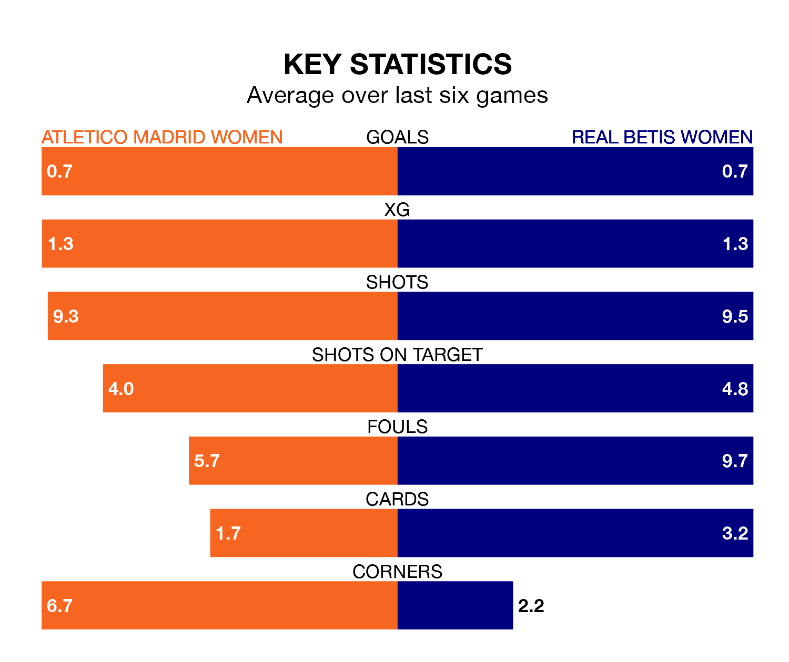

Struggling Real Betis Women face Atletico Madrid Women away at Centro Deportivo Alcalá de Henares on Sunday looking to build on a win in their last league outing.
After securing all three points with a 2-1 victory over Levante Las Planas on April 13, Betis Women sit 14th in Liga F.
They travel to play an Atletico Madrid side fifth in the standings, who lost in their last match, 1-0 against Athletic Club Women, on April 14.
In the last 10 years, Atletico Madrid and Betis Women have played each other on 14 occasions. Atletico Madrid won 11 of them and they drew three times.
On average, Atletico Madrid scored 2.6 goals and Betis Women 0.9 in those matches.
Their last meeting was on December 10, when Atletico Madrid won 2-0 away.
With 21 goals in 23 games so far this season, Betis Women are scoring at below the league average rate with 0.9 goals per game. And they are conceding more than average, letting in 55 goals at a rate of 2.4 per game.
Atletico Madrid, meanwhile, are average scorers, with 1.6 goals per game. They have conceded 0.7 goals per game.
In Sheila Guijarro Gómez, the hosts have one of the league's most on-form strikers so far this season. She has notched 12 goals in 22 appearances, to sit fourth in the scoring charts.
Her goal rate of one every 143 minutes is quicker than that of Tiffany Cameron, the away team's top scorer with a goal every 271 minutes, and a total of four goals in 23 games.
Atletico Madrid are in mixed form in Liga F, with three wins and a draw from their last six games.
With a win and three draws over that period, Betis Women's form is worse – they have taken six points from 18, compared to Atletico Madrid's 10.
Updated: 11:31 (UTC), 15/04/24